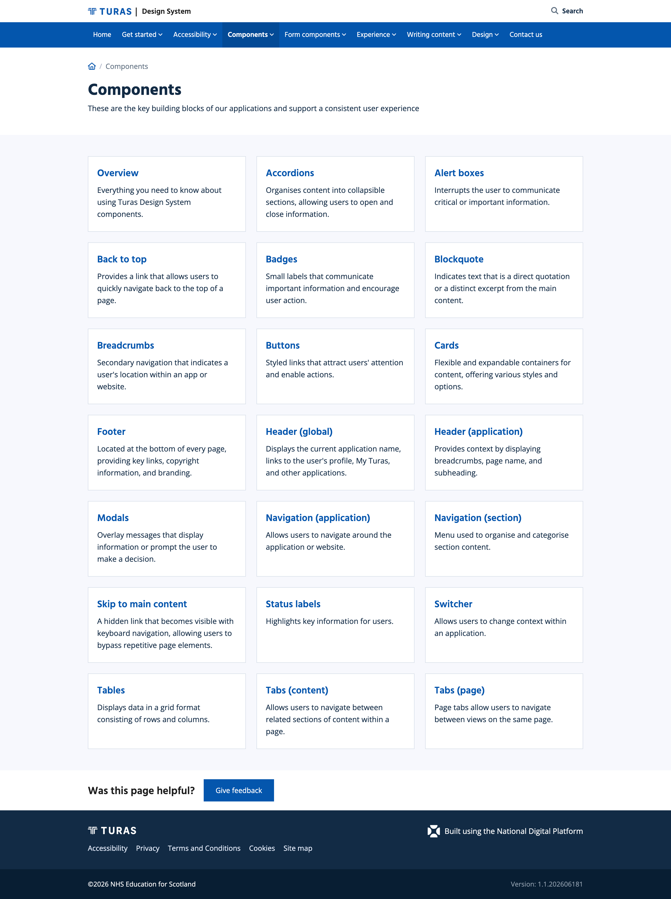
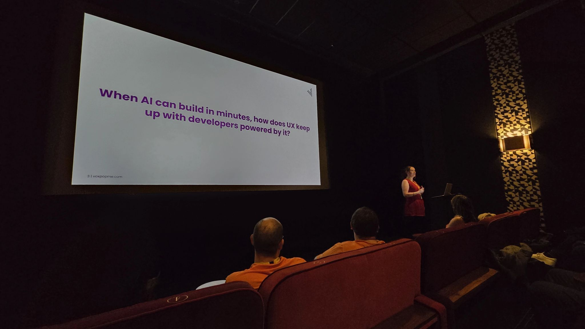

From patient stories to a movement: AI adoption in the NHS
How designing for vulnerable people at Iternal led to a role modernising the NHS, and how upskilling a resistant team created a ripple effect that reached over 1,000 professionals worldwide.
- Designed patient diaries at Iternal, leading to NHS contracts and Innovate UK funding.
- Joined NHS Education for Scotland and drove AI adoption in a resistant organisation.
- Trained over 1,000 professionals worldwide across NHS, charities and conferences.
- Won the Women in Tech Award and TechWomen100 listing, and was named an AI Champion of the Year finalist.
I work from the people, not the tool. At the NHS that meant starting with whoever was curious, introducing a tool only at the point someone actually needed it, and letting the output make the argument rather than a pitch. I researched the real constraints too, so the information governance teams got sessions built around their specific worries rather than a generic demo.
Designing for children in hospital
My first UX role after School of Code was at Iternal, a startup building digital patient diaries for children and their parents during hospital stays.
The idea was simple and human, since while in hospital children and families could tell their stories, share them with loved ones, and stay connected, and doctors could follow along. It gave people in an isolating situation a voice. I led the UX for that product, and the work was noticed. It directly led to Iternal securing NHS contracts and Innovate UK funding, and it also led to a job offer from the NHS itself.
Digital diary for patients and parents
Designed a storytelling platform for children in hospital to share experiences with family, friends and clinical teams.
AR storytelling app for children
Secured grant funding to develop an augmented reality storytelling experience, with parallel VR research focused on dementia care.
Designing for children in hospital taught me that good UX isn't just about usability. It's about dignity. The people using your product are often scared, tired, and not there by choice, and that changes every design decision.
Joining an organisation that wasn't ready for change
When I joined NHS Education for Scotland as UX Designer and Researcher, it was 2023, the year ChatGPT took off. I was already using AI tools daily, however the team I joined was not.
The NHS is a complex, risk-averse institution. Prototyping was done in Axure, which was slow, siloed and inaccessible to most stakeholders, while AI tools were either unknown or actively distrusted. The culture was one of "we've always done it this way," and that wasn't anyone's fault, it was the environment.
Axure for everything
Prototyping lived in a specialist tool, which meant slow iteration cycles, a high technical barrier and limited stakeholder involvement.
No AI in the workflow
Teams were doing manually what AI could assist with, including presentations, content, research synthesis and documentation.
Meet people where they are. Show, don't tell.
Forcing adoption doesn't work in the NHS, and lecturing people about AI when they're already stretched doesn't either. So I started with the people who were curious and showed them one win at a time.
Rather than rolling out a big AI training programme upfront, I introduced tools at the point of need. Someone building a presentation would get shown Gamma, turning hours of work into minutes, and someone struggling with content would get ChatGPT for a first draft. The ask was never "learn this tool," it was always "try this for this specific thing."
- Specialist tool, slow iteration cycles
- High technical barrier to entry
- Most stakeholders couldn't open the files
- Design lived in one person's hands
- Shared, fast, collaborative iteration
- 166 components migrated across the estate
- Five-week training series for the team
- Stakeholders in the file, not on the sidelines

Designing services people actually needed
Alongside the cultural change work, I was leading substantive UX projects. These weren't internal tools for show, they were services that affected how NHS Scotland operated.
Five systems into one
Unified five separate systems for staff tracking, bed management and incident reporting into a single platform, reducing operational friction for clinical teams under pressure.
Identity management UX research
Conducted research that directly influenced Scottish Government decisions on digital access and identity management across NHS Scotland services.
I also contributed to the design system, building components that would be reused across NHS Scotland's digital estate, and I developed template boards to standardise design practice across the UX team.
Internal training that became an external movement
The AI training I started internally at the NHS didn't stay internal.
I was speaking at Leeds Digital, running Figma training and delivering UX Scotland recaps to the team, so as I learned externally I brought it back, and as I taught internally I got better at explaining it externally. That flywheel eventually took me to the main stage at UX Scotland, presenting to over 100 UX professionals on practical AI for user-centred design, and from there the invitations kept coming.

In parallel I started volunteering training for charities including JW3, Barnardo's, Anawim and The Luca Foundation, showing organisations with limited resources how AI could amplify their impact. Free sessions, practical tools, no jargon.
What it added up to
Women in Tech Award, Best Use of Tech in the Public Sector, 2024
Recognised for the full scope of the AI upskilling work, from modernising NHS design practice to training community members and equipping charities and professionals to use AI confidently and responsibly.
TechWomen100 list · AI Champion of the Year finalist, 2025
Recognition continued after leaving the NHS, since the work that started as internal team training had grown into a sustained programme of community impact.
What this taught me about change in large organisations
You can't mandate adoption, especially not in the NHS and especially not for technology people have been told to be cautious about. What you can do is find the path of least resistance, so the person who's curious, the task that takes too long, and the win that's impossible to argue with.
Showing someone that Gamma can build a presentation in minutes rather than hours isn't a training session, it's a demonstration that their time has value, which is the real argument for AI in any organisation. Not capability, but respect for the people doing the work. Everything that followed, the speaking invitations, the award, the charity work, the 1,000 professionals trained, started with showing one person one tool at the right moment, and that's still how I think about change.